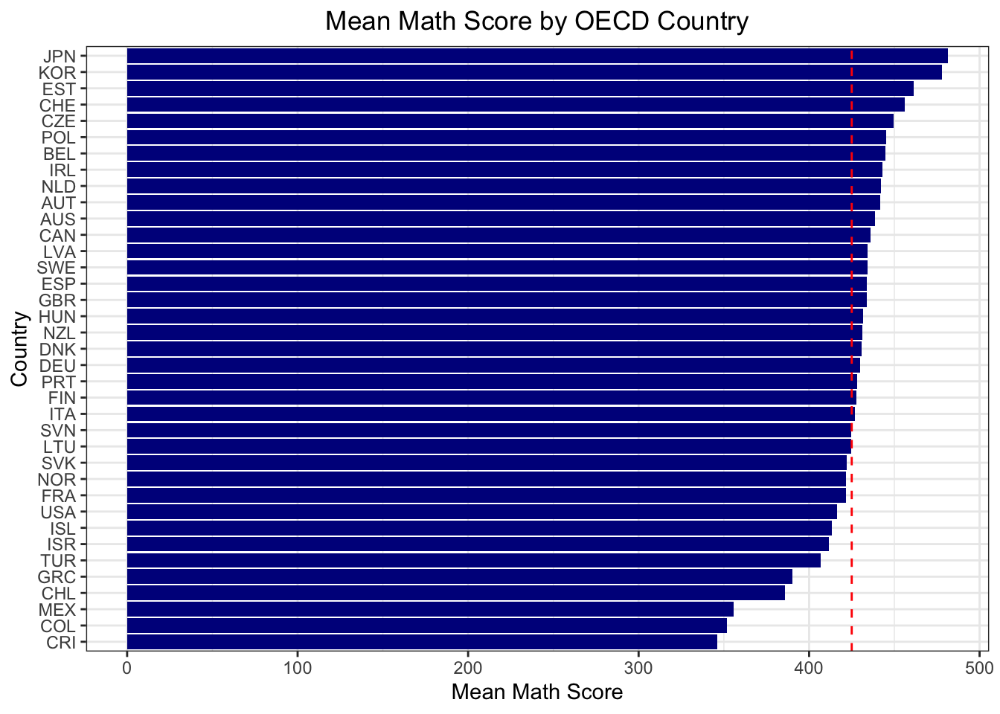
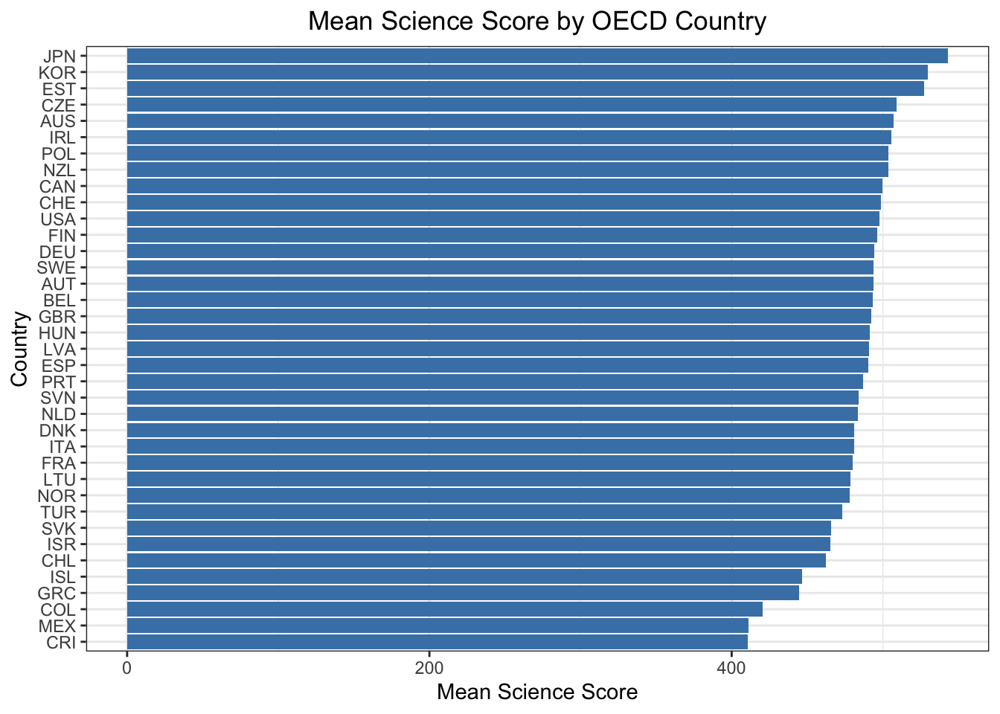
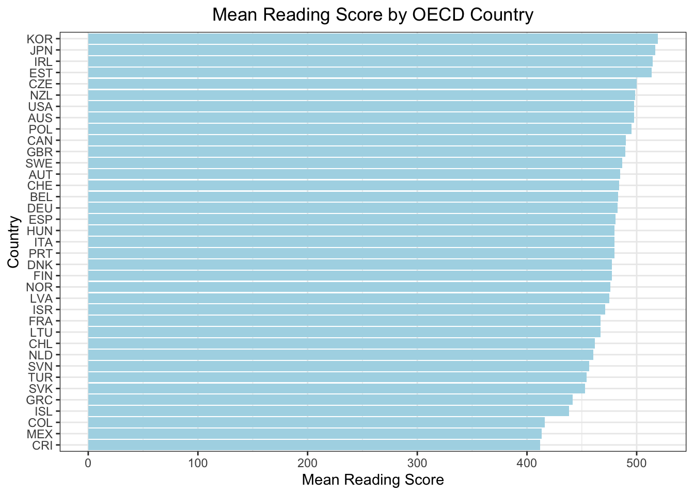
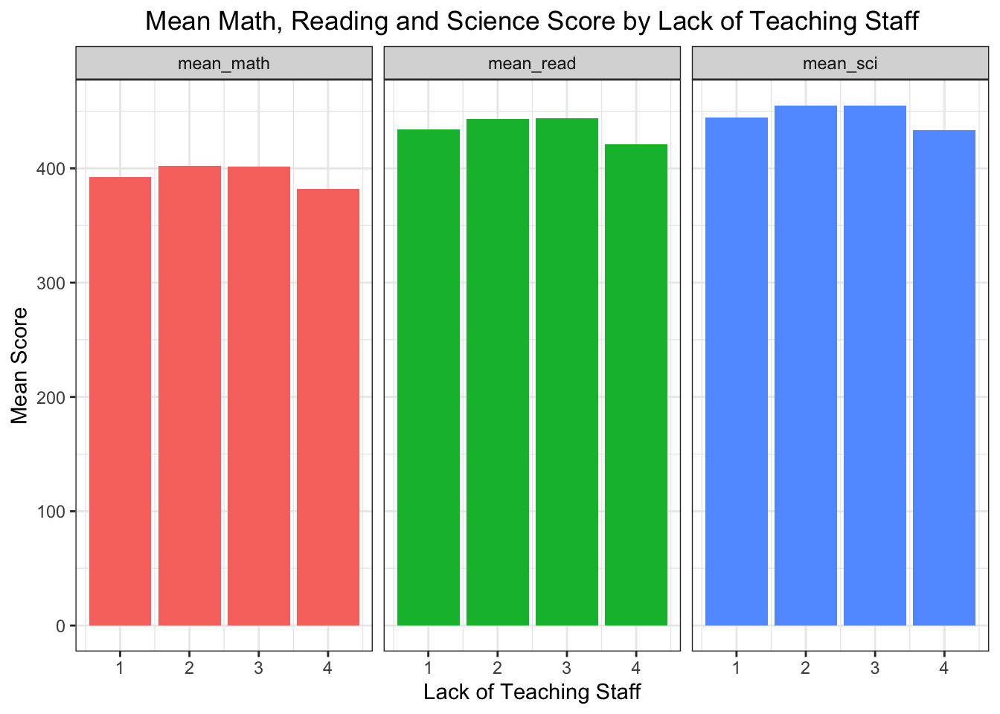
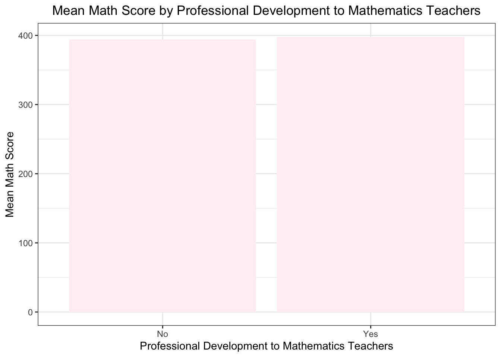
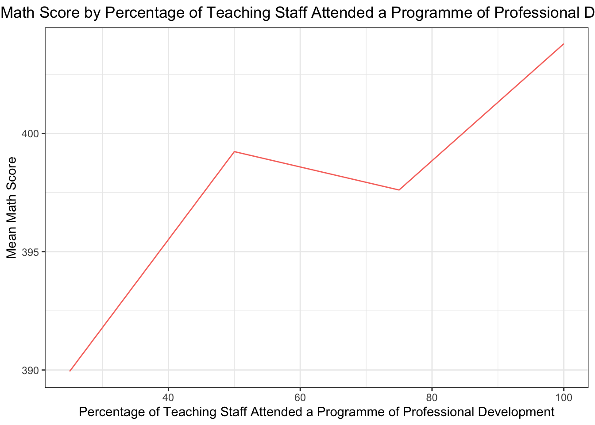
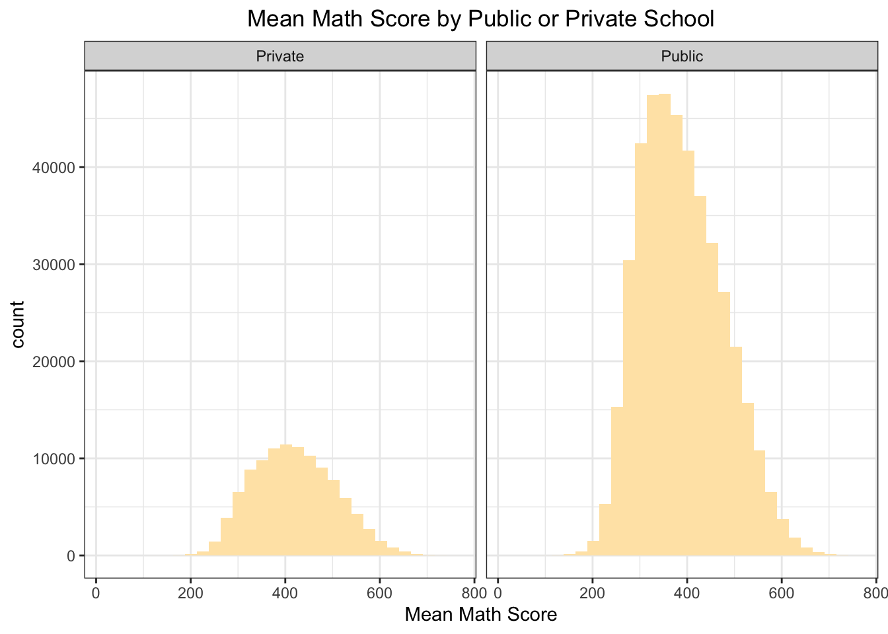
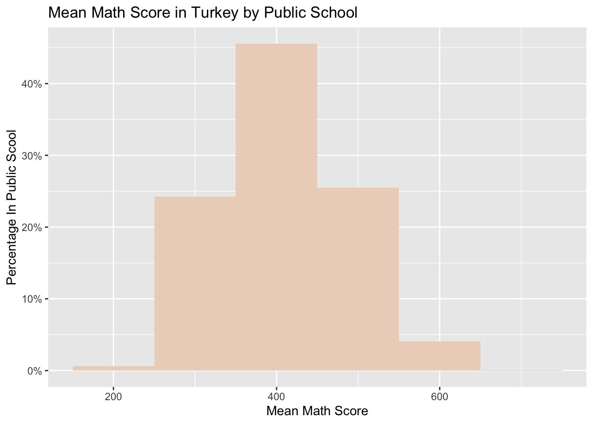
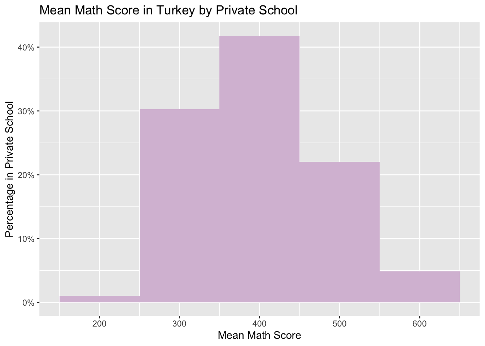

Top Scorers of OECD Countries: Two Far Eastern countries, Korea and Japan, and three Eastern Europe countries, Estonia, Poland and Czech Republic, are outstanding in terms of mean scores of all three subject.
Not The Best As Expected in OECD Countries: Finland, the country of which the education model is taken as a role model, has a mediocre performance. The most advanced countries like Germany, France and USA have again a mediocre performance.
Lack of teaching staff: If schools have ‘no’ or ‘a lot of staff missing teaching mathematics’, then their students’ performance in mathematics drops. If schools have a moderate number of missing (‘very little’ and ‘to some extent’) students’ performance in mathematics is not affected much.
Professional Development: Does your school offer professional development to mathematics teachers in any of the following? It seems there is no difference in students’ mathematical performance whether their school provides or does not professional development to the teachers.
Is your school a public or a private school? Answer to this question: In general, the school type does not matter much in students’ performance in PISA 2022.
Specifically in Turkey, we checked whether school type mattered in terms of frequency of high achievers: Interestingly, the percentage of high achievers as well as the lowest scorers coming from private schools is higher than public schools.
3.2 Package Installation and Data Summary:
Code
### Step 1: import librarieslibrary(tidyverse)
── Attaching core tidyverse packages ──────────────────────── tidyverse 2.0.0 ──
✔ dplyr 1.1.3 ✔ readr 2.1.4
✔ forcats 1.0.0 ✔ stringr 1.5.0
✔ ggplot2 3.4.4 ✔ tibble 3.2.1
✔ lubridate 1.9.3 ✔ tidyr 1.3.0
✔ purrr 1.0.2
── Conflicts ────────────────────────────────────────── tidyverse_conflicts() ──
✖ dplyr::filter() masks stats::filter()
✖ dplyr::lag() masks stats::lag()
ℹ Use the conflicted package (<http://conflicted.r-lib.org/>) to force all conflicts to become errors
Code
library(dplyr)library(ggplot2)library(scales)
Attaching package: 'scales'
The following object is masked from 'package:purrr':
discard
The following object is masked from 'package:readr':
col_factor
# head(pisa,10)# drop x columnpisa <- pisa %>%select(-X)# check summary#summary(pisa)#sapply(pisa, function(x) sum(is.na(x)))# check the data#str(pisa)#length(pisa)
3.3 Mean Of Math, Reading and Science Scores By OECD Countries:
Sums and means of PV scores for each subject and each row are summarised as additional columns:
Code
# Step 3: EDA# calculate the PV1MATH+PV2MATH+PV3MATH+PV4MATH+PV5MATH+PV6MATH+PV7MATH+PV8MATH+PV9MATH+PV10MATH and save it as a new column# get the column names of the math scores avg#colnames(pisa)[5:14]pisa$SUMMATH <-rowSums(pisa[, 5:14], na.rm =TRUE)pisa$mean_math <-rowMeans(pisa[, 5:14], na.rm =TRUE)#calculate mean mat# get READ scores columns#colnames(pisa)[15:24]# calculate the SCI score and save it as a new columnpisa$SUMREAD <-rowSums(pisa[, 15:24], na.rm =TRUE)pisa$mean_read <-rowMeans(pisa[, 15:24], na.rm =TRUE)# get SCI scores columns#colnames(pisa)[25:34]# calculate the SCI score and save it as a new columnpisa$SUMSCI <-rowSums(pisa[, 25:34], na.rm =TRUE)pisa$mean_sci <-rowMeans(pisa[, 25:34], na.rm =TRUE)
Mean column is grouped by OECD countries for each subject:
Code
# caluculate the mean of the math, read and sci scores by OECD countrypisa_mean <- pisa %>%filter(OECD_x ==1) %>%group_by(CNT) %>%summarise(mean_math =mean(mean_math, na.rm =TRUE),mean_read =mean(mean_read, na.rm =TRUE),mean_sci =mean(mean_sci, na.rm =TRUE))#calculate the mean math score of OECD countries:pisa_mean_mean <- pisa_mean %>%summarise(mean_mean =mean(mean_math))print(pisa_mean_mean)
# A tibble: 1 × 1
mean_mean
<dbl>
1 426.
Below is mean math score by OECD country:
Code
# sort the data by mean_mathpisa_mean <- pisa_mean %>%arrange(desc(mean_math))# visualize the data by mean_mathggplot(pisa_mean, aes(x =reorder(CNT, mean_math), y = mean_math)) +geom_bar(stat ="identity", fill ="darkblue") +#highlight the average valuegeom_hline(yintercept =425, linetype ="dashed", color ="red") +coord_flip() +labs(title ="Mean Math Score by OECD Country",x ="Country",y ="Mean Math Score") +theme_bw() +theme(plot.title =element_text(hjust =0.5))

..and below is the representation of mean science and reading scores by OECD countries:
Code
# sort the data by sci scorepisa_mean <- pisa_mean %>%arrange(desc(mean_sci))# visualize the data by mean_sci#calculate the mean sci score of OECD countries:pisa_mean_mean <- pisa_mean %>%summarise(mean_mean =mean(mean_sci))print(pisa_mean_mean)
# A tibble: 1 × 1
mean_mean
<dbl>
1 484.
Code
ggplot(pisa_mean, aes(x =reorder(CNT, mean_sci), y = mean_sci)) +geom_bar(stat ="identity", fill ="steelblue") +#highlight the average valuegeom_hline(yintercept =484, linetype ="dashed", color ="red") +coord_flip() +labs(title ="Mean Science Score by OECD Country",x ="Country",y ="Mean Science Score") +theme_bw() +theme(plot.title =element_text(hjust =0.5))

Code
# sort the data by read scorepisa_mean <- pisa_mean %>%arrange(desc(mean_read))#calculate the mean read score of OECD countries:pisa_mean_mean <- pisa_mean %>%summarise(mean_mean =mean(mean_read))print(pisa_mean_mean)
# A tibble: 1 × 1
mean_mean
<dbl>
1 476.
Code
# visualize the data by mean_readggplot(pisa_mean, aes(x =reorder(CNT, mean_read), y = mean_read)) +geom_bar(stat ="identity", fill ="lightblue") +geom_hline(yintercept =475, linetype ="dashed", color ="red") +coord_flip() +labs(title ="Mean Reading Score by OECD Country",x ="Country",y ="Mean Reading Score") +theme_bw() +theme(plot.title =element_text(hjust =0.5))

Korea, Japan, Estonia and Czech Republic are part of top 5 in all of the subjects.
While Finland education method is promoted as the best, the scores of this country is mediocre among the OECD countries.
Turkey is among the last 5 out of OECD countries in all three subjects, together with Greece, Colombia and Mexico.
3.4 Mean Of Math, Reading and Science Scores by Lack Of Teaching Stuff:
Code
# SC017Q01NA Instruction hindered by: A lack of teaching staff #Not at all # Very little # To some extent # A lot#pisa$SC017Q01NA# group by SC017Q01NA calculate mean math score , mean read score and mean sci scorepisa_lack_of_teaching_staff <- pisa %>%group_by(SC017Q01NA) %>%summarise(mean_math =mean(mean_math, na.rm =TRUE),mean_read =mean(mean_read, na.rm =TRUE),mean_sci =mean(mean_sci, na.rm =TRUE)) pisa_lack_of_teaching_staff <- pisa_lack_of_teaching_staff %>%filter(!is.na(SC017Q01NA))# line plotpisa_lack_of_teaching_staff %>%gather(key ="subject", value ="score", mean_math, mean_read, mean_sci) %>%ggplot(aes(x = SC017Q01NA, y = score, fill = subject)) +geom_bar(position ="dodge", stat="identity") +labs(title ="Mean Math, Reading and Science Score by Lack of Teaching Staff", x ="Lack of Teaching Staff",y ="Mean Score") +facet_grid(. ~ subject) +theme_bw() +theme(plot.title =element_text(hjust =0.5)) +theme(legend.position ="none")

When there is no lack of teaching staff (1), the mean scores in all three subjects are interestingly lower than the cases where there is very little (2) to some extent (3) lack of staff. On the other hand, the mean score decreases again when there is serious lack of teaching staff (4) as we would expect.
3.5 Mean Math Score By Professional Development Provided To Teaching Staff:
Code
# SC184*** mean math score, mean read score and mean sci score "Does your school offer professional development to# mathematics teachers in any of the following?#pisa$SC184Q01JA # 1Yes 2No# set 1 as yes and 2 as nopisa_SC184Q01JA <- pisa %>%mutate(SC184Q01JA =ifelse(SC184Q01JA ==1, "Yes", "No"))# drp the NA pisa_SC184Q01JA <- pisa_SC184Q01JA %>%filter(!is.na(SC184Q01JA))professional_development_to_mathematics_teachers <- pisa_SC184Q01JA %>%group_by(SC184Q01JA) %>%summarise(mean_math =mean(mean_math, na.rm =TRUE))# line plot normalize the dataggplot(professional_development_to_mathematics_teachers, aes(x = SC184Q01JA, y = mean_math)) +geom_bar(stat ="identity", fill ="#F08D81") +labs(title ="Mean Math Score by Professional Development to Mathematics Teachers",x ="Professional Development to Mathematics Teachers",y ="Mean Math Score") +theme_bw() +theme(plot.title =element_text(hjust =0.5))

Code
#pisa_SC184Q01JA$SC184Q01JA
The score does not seem to be changing much based on whether the professional development is provided or not.
..Now let’s have a closer look on how the trend changes based on the professional programme attendance of teaching staff in the last three months:
Code
# During the last three months, what percentage of teaching# staff in your school has attended a programme of# professional development?# SC025Q01NA A Staff who teach mathematics at your# school#pisa$SC025Q02NA# 0-25 26-50 51-75 76-100pisa_SC025Q02NA <- pisa %>%mutate(SC025Q02NA =ifelse(SC025Q02NA <=25, 25, ifelse(SC025Q02NA <=50, 50, ifelse(SC025Q02NA <=75, 75, 100))))#pisa_SC025Q02NA$SC025Q02NA# drop naspisa_SC025Q02NA <- pisa_SC025Q02NA %>%filter(!is.na(SC025Q02NA))# group by SC025Q02NA calculate mean math scorepisa_SC025Q02NA <- pisa_SC025Q02NA %>%group_by(SC025Q02NA) %>%summarise(mean_maths =mean(mean_math, na.rm =TRUE))# line plot normalize the dataggplot(pisa_SC025Q02NA, aes(x = SC025Q02NA, y = mean_maths, color ="#E6E6FA")) +geom_line() +labs(title ="Mean Math Score by Percentage of Teaching Staff Attended a Programme of Professional Development",x ="Percentage of Teaching Staff Attended a Programme of Professional Development",y ="Mean Math Score") +theme_bw() +theme(plot.title =element_text(hjust =0.5)) +theme(legend.position ="none")

Even though the gap is not highly significant, we can talk about an upward trend as the teaching staff gets more professional development opportunities.
3.6 Mean Math Score by Public or Private School:
Code
# SC013 Is your school a public or a private school?#pisa$SC013Q01TA# group by SC013Q01TA calculate mean math score # 1Public 2Privatepisa_SC013Q01TA <- pisa %>%group_by(SC013Q01TA) %>%summarise(mean_maths =mean(mean_math, na.rm =TRUE)) pisa_SC013Q01TA$SC013Q01TA <-ifelse(pisa_SC013Q01TA$SC013Q01TA ==1, "Public", "Private")# drop naspisa_SC013Q01TA <- pisa_SC013Q01TA %>%filter(!is.na(SC013Q01TA))# plot the dataggplot(pisa_SC013Q01TA, aes(x = SC013Q01TA, y = mean_maths)) +geom_bar(stat ="identity", fill ="#90EE90") +labs(title ="Mean Math Score by Public or Private School",x ="Public or Private School",y ="Mean Math Score") +theme_bw() +theme(plot.title =element_text(hjust =0.5))

Now we would like to focus on the distribution of scores based on the school type in Turkey:
Code
# group by SC013Q01TA filter TR calculate mean math score # 1Public 2Privatepisa_SC013Q01TA <- pisa %>%filter(CNT=="TUR") %>%group_by(SC013Q01TA) %>%summarise(mean_math, na.rm =TRUE)
Warning: Returning more (or less) than 1 row per `summarise()` group was deprecated in
dplyr 1.1.0.
ℹ Please use `reframe()` instead.
ℹ When switching from `summarise()` to `reframe()`, remember that `reframe()`
always returns an ungrouped data frame and adjust accordingly.
`summarise()` has grouped output by 'SC013Q01TA'. You can override using the
`.groups` argument.
Code
pisa_SC013Q01TA$SC013Q01TA <-ifelse(pisa_SC013Q01TA$SC013Q01TA ==1, "Public", "Private")# filter public schoolpisa_SC013Q01TA_public <- pisa_SC013Q01TA %>%filter(SC013Q01TA =="Public")# plot the dataggplot(pisa_SC013Q01TA_public, aes(x = mean_math)) +geom_histogram(aes(y =after_stat(count /sum(count))), binwidth =100) +stat_bin(binwidth =100, fill="#ECD5C4",aes(y =after_stat(count /sum(count)), label = scales::percent(after_stat(count /sum(count))))) +scale_y_continuous(labels = scales::percent) +labs(title ="Mean Math Score in Turkey by Public School",x ="Mean Math Score", y ="Percentage In Public Scool")
Warning in stat_bin(binwidth = 100, fill = "#ECD5C4", aes(y =
after_stat(count/sum(count)), : Ignoring unknown aesthetics: label

Code
# group by SC013Q01TA Filter TR & group by SC013Q01TA calculate mean math score # 1Public 2Privatepisa_SC013Q01TA <- pisa %>%filter(CNT=="TUR") %>%group_by(SC013Q01TA) %>%summarise(mean_math, na.rm =TRUE)
Warning: Returning more (or less) than 1 row per `summarise()` group was deprecated in
dplyr 1.1.0.
ℹ Please use `reframe()` instead.
ℹ When switching from `summarise()` to `reframe()`, remember that `reframe()`
always returns an ungrouped data frame and adjust accordingly.
`summarise()` has grouped output by 'SC013Q01TA'. You can override using the
`.groups` argument.
Code
pisa_SC013Q01TA$SC013Q01TA <-ifelse(pisa_SC013Q01TA$SC013Q01TA ==1, "Public", "Private")# Filter private schoolpisa_SC013Q01TA_private <- pisa_SC013Q01TA %>%filter(SC013Q01TA =="Private")# plot the dataggplot(pisa_SC013Q01TA_private, aes(x = mean_math)) +geom_histogram(aes(y =after_stat(count /sum(count))), binwidth =100) +stat_bin(binwidth =100, fill ="#D8BFD8",aes(y =after_stat(count /sum(count)), label = scales::percent(after_stat(count /sum(count))))) +scale_y_continuous(labels = scales::percent) +labs(title ="Mean Math Score in Turkey by Private School",x ="Mean Math Score", y ="Percentage in Private School")
Warning in stat_bin(binwidth = 100, fill = "#D8BFD8", aes(y =
after_stat(count/sum(count)), : Ignoring unknown aesthetics: label

While there is a steeper graph in public schools with more densed scores in medium values, the propensity of the lowest scorers as well as the highest achievers is higher in private schools.
Source Code
---title: "PISA'22 Exploratory Data Analysis"date: "2023-12-30"editor: visualcode-fold: truecode-tools: true---## Key Takeaways- **Top Scorers of OECD Countries:** Two Far Eastern countries, Korea and Japan, and three Eastern Europe countries, Estonia, Poland and Czech Republic, are outstanding in terms of mean scores of all three subject.- **Not The Best As Expected in OECD Countries:** Finland, the country of which the education model is taken as a role model, has a mediocre performance. The most advanced countries like Germany, France and USA have again a mediocre performance.- **Lack of teaching staff:** If schools have 'no' or 'a lot of staff missing teaching mathematics', then their students' performance in mathematics drops. If schools have a moderate number of missing ('very little' and 'to some extent') students' performance in mathematics is not affected much.- **Professional Development:** Does your school offer professional development to mathematics teachers in any of the following? It seems there is no difference in students' mathematical performance whether their school provides or does not professional development to the teachers.- **Is your school a public or a private school? Answer to this question:** In general, the school type does not matter much in students' performance in PISA 2022.- **Specifically in Turkey, we checked whether school type mattered in terms of frequency of high achievers:** Interestingly, the percentage of high achievers as well as the lowest scorers coming from private schools is higher than public schools.## Package Installation and Data Summary:```{r}### Step 1: import librarieslibrary(tidyverse)library(dplyr)library(ggplot2)library(scales)library(RColorBrewer)# library(ggridges)library(knitr)# library(kableExtra)# library(DT)# library(shiny)# Step 2: import data# load Rdataload("pisa.RData")# check the data#str(pisa)length(pisa)# head(pisa,10)# drop x columnpisa <- pisa %>%select(-X)# check summary#summary(pisa)#sapply(pisa, function(x) sum(is.na(x)))# check the data#str(pisa)#length(pisa)```## Mean Of Math, Reading and Science Scores By OECD Countries:Sums and means of PV scores for each subject and each row are summarised as additional columns:```{r}# Step 3: EDA# calculate the PV1MATH+PV2MATH+PV3MATH+PV4MATH+PV5MATH+PV6MATH+PV7MATH+PV8MATH+PV9MATH+PV10MATH and save it as a new column# get the column names of the math scores avg#colnames(pisa)[5:14]pisa$SUMMATH <-rowSums(pisa[, 5:14], na.rm =TRUE)pisa$mean_math <-rowMeans(pisa[, 5:14], na.rm =TRUE)#calculate mean mat# get READ scores columns#colnames(pisa)[15:24]# calculate the SCI score and save it as a new columnpisa$SUMREAD <-rowSums(pisa[, 15:24], na.rm =TRUE)pisa$mean_read <-rowMeans(pisa[, 15:24], na.rm =TRUE)# get SCI scores columns#colnames(pisa)[25:34]# calculate the SCI score and save it as a new columnpisa$SUMSCI <-rowSums(pisa[, 25:34], na.rm =TRUE)pisa$mean_sci <-rowMeans(pisa[, 25:34], na.rm =TRUE)```Mean column is grouped by OECD countries for each subject:```{r}# caluculate the mean of the math, read and sci scores by OECD countrypisa_mean <- pisa %>%filter(OECD_x ==1) %>%group_by(CNT) %>%summarise(mean_math =mean(mean_math, na.rm =TRUE),mean_read =mean(mean_read, na.rm =TRUE),mean_sci =mean(mean_sci, na.rm =TRUE))#calculate the mean math score of OECD countries:pisa_mean_mean <- pisa_mean %>%summarise(mean_mean =mean(mean_math))print(pisa_mean_mean)```Below is mean math score by OECD country:```{r}# sort the data by mean_mathpisa_mean <- pisa_mean %>%arrange(desc(mean_math))# visualize the data by mean_mathggplot(pisa_mean, aes(x =reorder(CNT, mean_math), y = mean_math)) +geom_bar(stat ="identity", fill ="darkblue") +#highlight the average valuegeom_hline(yintercept =425, linetype ="dashed", color ="red") +coord_flip() +labs(title ="Mean Math Score by OECD Country",x ="Country",y ="Mean Math Score") +theme_bw() +theme(plot.title =element_text(hjust =0.5))```..and below is the representation of mean science and reading scores by OECD countries:```{r}# sort the data by sci scorepisa_mean <- pisa_mean %>%arrange(desc(mean_sci))# visualize the data by mean_sci#calculate the mean sci score of OECD countries:pisa_mean_mean <- pisa_mean %>%summarise(mean_mean =mean(mean_sci))print(pisa_mean_mean)ggplot(pisa_mean, aes(x =reorder(CNT, mean_sci), y = mean_sci)) +geom_bar(stat ="identity", fill ="steelblue") +#highlight the average valuegeom_hline(yintercept =484, linetype ="dashed", color ="red") +coord_flip() +labs(title ="Mean Science Score by OECD Country",x ="Country",y ="Mean Science Score") +theme_bw() +theme(plot.title =element_text(hjust =0.5))# sort the data by read scorepisa_mean <- pisa_mean %>%arrange(desc(mean_read))#calculate the mean read score of OECD countries:pisa_mean_mean <- pisa_mean %>%summarise(mean_mean =mean(mean_read))print(pisa_mean_mean)# visualize the data by mean_readggplot(pisa_mean, aes(x =reorder(CNT, mean_read), y = mean_read)) +geom_bar(stat ="identity", fill ="lightblue") +geom_hline(yintercept =475, linetype ="dashed", color ="red") +coord_flip() +labs(title ="Mean Reading Score by OECD Country",x ="Country",y ="Mean Reading Score") +theme_bw() +theme(plot.title =element_text(hjust =0.5))```- Korea, Japan, Estonia and Czech Republic are part of top 5 in all of the subjects.- While Finland education method is promoted as the best, the scores of this country is mediocre among the OECD countries.- Turkey is among the last 5 out of OECD countries in all three subjects, together with Greece, Colombia and Mexico.## Mean Of Math, Reading and Science Scores by Lack Of Teaching Stuff:```{r}# SC017Q01NA Instruction hindered by: A lack of teaching staff #Not at all # Very little # To some extent # A lot#pisa$SC017Q01NA# group by SC017Q01NA calculate mean math score , mean read score and mean sci scorepisa_lack_of_teaching_staff <- pisa %>%group_by(SC017Q01NA) %>%summarise(mean_math =mean(mean_math, na.rm =TRUE),mean_read =mean(mean_read, na.rm =TRUE),mean_sci =mean(mean_sci, na.rm =TRUE)) pisa_lack_of_teaching_staff <- pisa_lack_of_teaching_staff %>%filter(!is.na(SC017Q01NA))# line plotpisa_lack_of_teaching_staff %>%gather(key ="subject", value ="score", mean_math, mean_read, mean_sci) %>%ggplot(aes(x = SC017Q01NA, y = score, fill = subject)) +geom_bar(position ="dodge", stat="identity") +labs(title ="Mean Math, Reading and Science Score by Lack of Teaching Staff", x ="Lack of Teaching Staff",y ="Mean Score") +facet_grid(. ~ subject) +theme_bw() +theme(plot.title =element_text(hjust =0.5)) +theme(legend.position ="none")```When there is no lack of teaching staff (1), the mean scores in all three subjects are interestingly lower than the cases where there is very little (2) to some extent (3) lack of staff. On the other hand, the mean score decreases again when there is serious lack of teaching staff (4) as we would expect.## Mean Math Score By Professional Development Provided To Teaching Staff:```{r}# SC184*** mean math score, mean read score and mean sci score "Does your school offer professional development to# mathematics teachers in any of the following?#pisa$SC184Q01JA # 1Yes 2No# set 1 as yes and 2 as nopisa_SC184Q01JA <- pisa %>%mutate(SC184Q01JA =ifelse(SC184Q01JA ==1, "Yes", "No"))# drp the NA pisa_SC184Q01JA <- pisa_SC184Q01JA %>%filter(!is.na(SC184Q01JA))professional_development_to_mathematics_teachers <- pisa_SC184Q01JA %>%group_by(SC184Q01JA) %>%summarise(mean_math =mean(mean_math, na.rm =TRUE))# line plot normalize the dataggplot(professional_development_to_mathematics_teachers, aes(x = SC184Q01JA, y = mean_math)) +geom_bar(stat ="identity", fill ="#F08D81") +labs(title ="Mean Math Score by Professional Development to Mathematics Teachers",x ="Professional Development to Mathematics Teachers",y ="Mean Math Score") +theme_bw() +theme(plot.title =element_text(hjust =0.5))#pisa_SC184Q01JA$SC184Q01JA```The score does not seem to be changing much based on whether the professional development is provided or not...Now let's have a closer look on how the trend changes based on the professional programme attendance of teaching staff in the last three months:```{r}# During the last three months, what percentage of teaching# staff in your school has attended a programme of# professional development?# SC025Q01NA A Staff who teach mathematics at your# school#pisa$SC025Q02NA# 0-25 26-50 51-75 76-100pisa_SC025Q02NA <- pisa %>%mutate(SC025Q02NA =ifelse(SC025Q02NA <=25, 25, ifelse(SC025Q02NA <=50, 50, ifelse(SC025Q02NA <=75, 75, 100))))#pisa_SC025Q02NA$SC025Q02NA# drop naspisa_SC025Q02NA <- pisa_SC025Q02NA %>%filter(!is.na(SC025Q02NA))# group by SC025Q02NA calculate mean math scorepisa_SC025Q02NA <- pisa_SC025Q02NA %>%group_by(SC025Q02NA) %>%summarise(mean_maths =mean(mean_math, na.rm =TRUE))# line plot normalize the dataggplot(pisa_SC025Q02NA, aes(x = SC025Q02NA, y = mean_maths, color ="#E6E6FA")) +geom_line() +labs(title ="Mean Math Score by Percentage of Teaching Staff Attended a Programme of Professional Development",x ="Percentage of Teaching Staff Attended a Programme of Professional Development",y ="Mean Math Score") +theme_bw() +theme(plot.title =element_text(hjust =0.5)) +theme(legend.position ="none")```Even though the gap is not highly significant, we can talk about an upward trend as the teaching staff gets more professional development opportunities.## Mean Math Score by Public or Private School:```{r}# SC013 Is your school a public or a private school?#pisa$SC013Q01TA# group by SC013Q01TA calculate mean math score # 1Public 2Privatepisa_SC013Q01TA <- pisa %>%group_by(SC013Q01TA) %>%summarise(mean_maths =mean(mean_math, na.rm =TRUE)) pisa_SC013Q01TA$SC013Q01TA <-ifelse(pisa_SC013Q01TA$SC013Q01TA ==1, "Public", "Private")# drop naspisa_SC013Q01TA <- pisa_SC013Q01TA %>%filter(!is.na(SC013Q01TA))# plot the dataggplot(pisa_SC013Q01TA, aes(x = SC013Q01TA, y = mean_maths)) +geom_bar(stat ="identity", fill ="#90EE90") +labs(title ="Mean Math Score by Public or Private School",x ="Public or Private School",y ="Mean Math Score") +theme_bw() +theme(plot.title =element_text(hjust =0.5))```Now we would like to focus on the distribution of scores based on the school type in Turkey:```{r}# group by SC013Q01TA filter TR calculate mean math score # 1Public 2Privatepisa_SC013Q01TA <- pisa %>%filter(CNT=="TUR") %>%group_by(SC013Q01TA) %>%summarise(mean_math, na.rm =TRUE) pisa_SC013Q01TA$SC013Q01TA <-ifelse(pisa_SC013Q01TA$SC013Q01TA ==1, "Public", "Private")# filter public schoolpisa_SC013Q01TA_public <- pisa_SC013Q01TA %>%filter(SC013Q01TA =="Public")# plot the dataggplot(pisa_SC013Q01TA_public, aes(x = mean_math)) +geom_histogram(aes(y =after_stat(count /sum(count))), binwidth =100) +stat_bin(binwidth =100, fill="#ECD5C4",aes(y =after_stat(count /sum(count)), label = scales::percent(after_stat(count /sum(count))))) +scale_y_continuous(labels = scales::percent) +labs(title ="Mean Math Score in Turkey by Public School",x ="Mean Math Score", y ="Percentage In Public Scool") ``````{r}# group by SC013Q01TA Filter TR & group by SC013Q01TA calculate mean math score # 1Public 2Privatepisa_SC013Q01TA <- pisa %>%filter(CNT=="TUR") %>%group_by(SC013Q01TA) %>%summarise(mean_math, na.rm =TRUE) pisa_SC013Q01TA$SC013Q01TA <-ifelse(pisa_SC013Q01TA$SC013Q01TA ==1, "Public", "Private")# Filter private schoolpisa_SC013Q01TA_private <- pisa_SC013Q01TA %>%filter(SC013Q01TA =="Private")# plot the dataggplot(pisa_SC013Q01TA_private, aes(x = mean_math)) +geom_histogram(aes(y =after_stat(count /sum(count))), binwidth =100) +stat_bin(binwidth =100, fill ="#D8BFD8",aes(y =after_stat(count /sum(count)), label = scales::percent(after_stat(count /sum(count))))) +scale_y_continuous(labels = scales::percent) +labs(title ="Mean Math Score in Turkey by Private School",x ="Mean Math Score", y ="Percentage in Private School") ```While there is a steeper graph in public schools with more densed scores in medium values, the propensity of the lowest scorers as well as the highest achievers is higher in private schools.